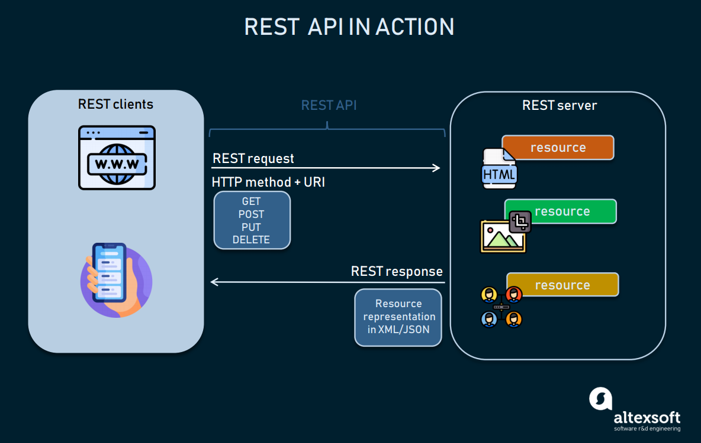

MY BLOGS
Discuss the scope of
var, let, and const
We always diclayer every variable using the ver let and cont keyword. This every keyword has some own scope behaviour. Now i will discuss about it.
var:
var is an ES5 element. var maintain global and function scope. If we defin any variable using var keyword inside a function we can't access the variable the form outside the function. Var alow hosting thats why we can use any variable before define the variable.
let:
let is an ES6 element. let maintain block and scope. If we defin any variable using let keyword inside any block scope we can't access the variable the form outside the block scope. Var don't alow hosting thats why we can't use any variable before define the variable. If we use it trough an error.
const:
const is an ES6 element. const maintain block and scope. If we defin any variable using const keyword inside any block scope we can't access the variable the form outside the block scope. const don't alow hosting thats why we can't use any variable before define the variable. If we use it trough an error.
cases of null and undefined

null and undefined both also primitive data type in JavaScript. But they both has some different won use cases. Now I will discuss about this cases.
Null:
Null is intentional absence of the value. Basically we use null for if we diclayred any variable or object itm valueless we can use set null as a reference its mins the variable hsa no value. when ue access the variable or object item its print null.
Undefined:
When we defined a nay type of variable or add object item without sate value. The javascript compiler set this variable value bydefault undefined. If we try to access the variable javascript compiler give undefined as value. As same when we try to access any object item which is not exist in the object on this time js compiler return undefined value.
REST API
REST API:
API means application programming interface and REST means representational state transfer. REST API use for transfer data into different tow layers. As like clint side to server or server to server whatever. In other words, if you want to interact with a computer or system to retrieve information or perform a function, an API helps you communicate what you want to that system so it can understand and fulfill the request.